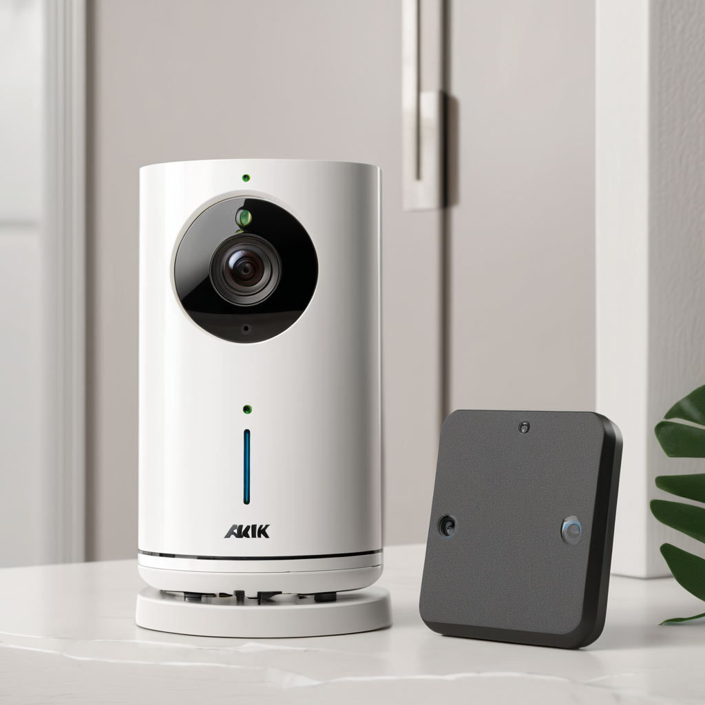
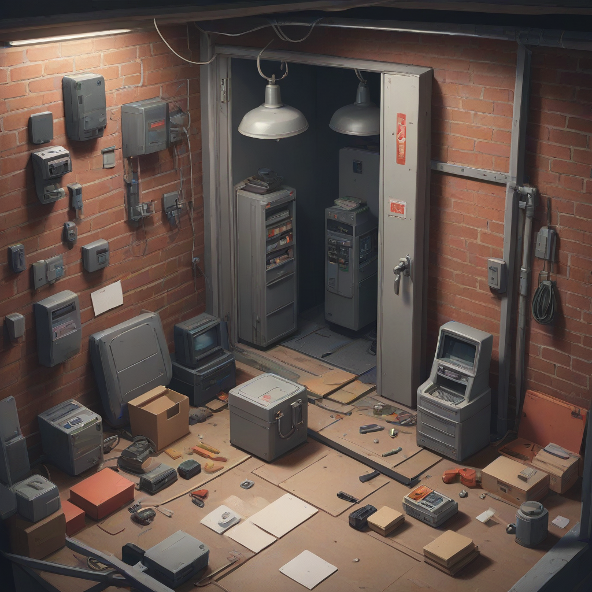
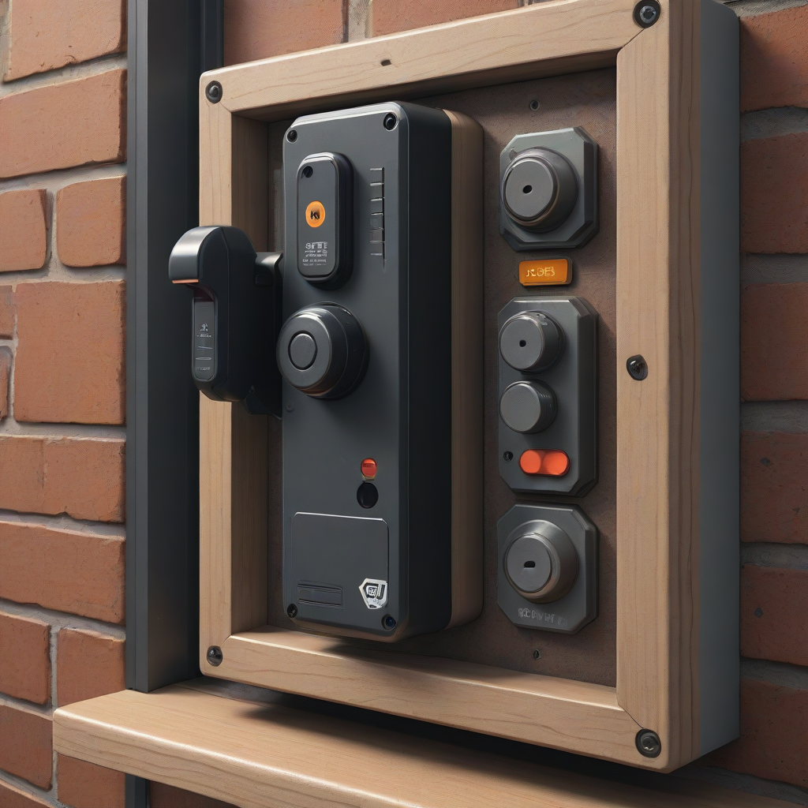

Quick Answer: The best no drill security system for renters in 2026 is the SimpliSafe Home Security, which uses strong adhesive mounts for sensors and offers optional professional monitoring without long-term contracts. For camera-focused setups, the Arlo Essential Wireless system is ideal for wireless alarm for apartments needs, providing high-definition video storage without hardwiring. Always check your lease agreement regarding adhesive removal to ensure your deposit is safe.
Securing your living space is a fundamental responsibility, regardless of whether you own the property or rent it. However, renters face a unique set of challenges when it comes to home safety. Traditional security systems often require drilling holes for sensors, wiring cameras, and installing hardwired control panels. These modifications can lead to damaged walls, dinged-up trim, and, most critically, the loss of your security deposit when you move out. Finding a balance between robust protection and lease compliance is essential for peace of mind.
This guide focuses on practical, actionable solutions that prioritize safety without compromising your rental agreement. We will explore the top-rated no drill security system for renters options available in 2026. By utilizing modern wireless technology, you can create a comprehensive safety net that is portable, effective, and completely removable. Whether you are looking for peel and stick security sensors or a full portable home alarm system, the goal is to protect your belongings and your family without leaving a trace behind.
Why Renters Need Dedicated Security Solutions

Many tenants assume that standard security measures apply universally, but rental properties often have specific restrictions. Landlords worry about structural damage, and standard security installation guidelines often conflict with lease clauses. A wireless alarm for apartments solves this friction point. These systems rely on battery power and adhesive technology rather than screws and wires. This distinction is vital for maintaining your security deposit.
Furthermore, renters need flexibility. You may move apartments more frequently than a homeowner, or you may need to rearrange furniture to accommodate a different floor plan. A hardwired system is static; a wireless system moves with you. This portability extends the lifespan of your security investment. Instead of buying a new system every time you move, you can simply unmount your renter friendly security cameras and sensors, pack them safely, and reinstall them in your new space. This approach is both budget-conscious and environmentally responsible.
Safety should never be compromised due to rental status. Break-ins happen in apartments and condos just as often as in single-family homes. By choosing an apartment security lease compliant solution, you

Top No-Drill Security Systems for 2026
When selecting a system, reliability and ease of installation are paramount. We have tested and reviewed the leading options on the market to bring you honest assessments. Below, we detail three top contenders that excel in the no-drill category.
SimpliSafe Home Security
SimpliSafe remains the gold standard for no drill security system for renters due to its intuitive design and lack of long-term contracts. The system uses a strong adhesive tape provided in the kit to mount sensors to doors and windows. This adhesive is designed to hold the sensor securely while allowing for clean removal later. The base station connects via cellular backup, meaning your alarm works even if your internet goes down.
- Price: Starts around $249 for the standard kit.
- Monitoring: Optional professional monitoring starting at $14.99/month.
- Pros: No contract, cellular backup, easy app control.
- Cons: No built-in cameras in the starter kit (must be purchased separately).
Ring Alarm 8th Gen (Renter Edition)
Ring has updated its offering specifically for the rental market. The system integrates seamlessly with other Ring devices, making it an excellent choice if you already own a Ring video doorbell. The sensors utilize a 3M adhesive backing that is strong yet removable. This system is particularly strong for those who want a wireless alarm for apartments that integrates with smart home ecosystems like Alexa.
- Price: Starts around $199 for the basic kit.
- Monitoring: Optional Ring Protect Plan starting at $10/month.
- Pros: Great smart home integration, affordable entry price.
- Cons: Requires Ring Protect subscription for video history and cellular backup.
Arlo Essential Wireless Security System
If your priority is video surveillance, Arlo is a top pick for renter friendly security cameras. The Arlo Essential system includes cameras that mount magnetically or with adhesive brackets. They do not require wiring for power or data. The system functions independently, allowing you to monitor your front door or backyard without running cables through walls.
- Price: Starts around $249 for a 3-camera kit.
- Monitoring: Optional Arlo Secure Plan starting at $4.99/month.
- Pros: High-quality video, completely wireless, smart detection features.
- Cons: Subscription required for advanced AI features and cloud storage.
Comparison of Top Renter Security Systems
To help you visualize the differences, we have compiled a comparison table of the leading portable home alarm system options. This allows you to weigh the cost against the features you actually need for your specific rental situation.
| Feature | SimpliSafe | Ring Alarm 8th Gen | Arlo Essential |
|---|---|---|---|
| Best For | Overall Protection | Smart Home Integration | Video Surveillance |
| Installation Method | Adhesive Mounts | Adhesive Mounts | Magnetic/Adhesive |
| Contract Required | No | No | No |
| Monitoring Cost | $14.99/mo | $10/mo | $4.99/mo |
| Cellular Backup | Yes | With Plan | No |
| Deposit Risk | Low | Low | Low |
Best Renter Friendly Security Cameras
While sensors protect your entry points, cameras provide visual evidence. For a no drill security system for renters to be complete, it should include video capabilities. The key here is choosing cameras that do not require power outlets near the wall. Battery-powered cameras are the solution.
Most modern renter friendly security cameras come with flexible mounting brackets. Some use a strong adhesive pad, while others use a screw-in bracket that you can place on a shelf or table rather than the wall. This is a crucial distinction. A camera sitting on a high shelf is still effective for monitoring a room or hallway and requires zero wall penetration. Additionally, ensure the camera has a local storage option or a SD card slot. Cloud storage is convenient, but local storage ensures you have your footage if your subscription lapses or internet connection is cut during a break-in.
When positioning these cameras, avoid direct sunlight to save battery life and prevent glare. Ensure the field of view covers your main entry points. If you are renting a studio or small apartment, a single centrally located camera might suffice. For larger units, consider a system with multiple units that share a single hub, such as the Arlo or Wyze ecosystems.
Installation Guide: Peel and Stick Security Sensors
The installation process is simple, but doing it correctly ensures the system works when you need it most. Here is a step-by-step guide for installing peel and stick security sensors to ensure maximum adhesion and minimal damage.
- Prep the Surface: Clean the area where you will place the sensor with rubbing alcohol. Dust, grease, or paint texture can weaken the adhesive bond.
- Check the Backing: Remove the protective liner from the adhesive pad. Do not touch the adhesive itself with your fingers to avoid transferring oils.
- Apply Pressure: Press the sensor firmly against the surface for at least 30 seconds. Some adhesives require 24 hours to reach full strength, so avoid tampering with the sensor for a day.
- Test the Signal: Before moving on, check your app or control panel to ensure the sensor is communicating with the hub. If it shows low battery or no signal, try a different location.
- Document the State: Take a photo of your walls before installation. When you move out, this proof helps demonstrate that you removed the sensors without causing damage.
If you must remove the sensors later, use a hairdryer to warm the adhesive. This softens the glue and allows you to peel it off slowly without tearing the paint or leaving residue. This simple trick is often the difference between keeping your deposit and losing a portion of it.
Portable Home Alarm System Alternatives
Not everyone wants a full multi-sensor system. Sometimes, a portable home alarm system is sufficient for vacation homes, dorm rooms, or short-term rentals. These devices are often standalone sirens that you can place anywhere. They typically feature a magnetic contact that triggers a loud alarm when the door or window opens.
These portable units are incredibly budget-friendly, often costing less than $50. They are ideal for renters who live alone and want a deterrent without the complexity of a hub or monthly fees. However, they lack professional monitoring. If the alarm goes off, it is up to you to respond. For this reason, they are best used as a supplement to a primary system or for properties where the risk level is lower.
Another alternative is the use of smart locks. While not a traditional alarm, smart locks that keyless entry via code or app add a layer of security without drilling. Ensure you check your lease, as some landlords restrict changing locks. However, many modern smart locks fit over existing deadbolts without modification, making them a viable apartment security lease compliant option.
Frequently Asked Questions
Below are answers to common questions regarding security systems for rental properties. We address the most pressing concerns tenants have when setting up a wireless alarm for apartments.
Will adhesive sensors damage my walls when I move out?
Generally, high-quality security adhesive is designed to be removable. However, wall texture and paint quality play a role. Smooth painted walls usually handle removal well. If you remove a sensor quickly after installation, it is more likely to leave residue. Allowing the adhesive to cure for a few weeks before removal, then using heat to loosen it, minimizes the risk of paint peeling.
Do I need a professional monitoring plan?
It depends on your safety priorities. Self-monitoring is free and sends alerts to your phone, but you must call 911 yourself. Professional monitoring ensures that a third party contacts emergency services if you cannot. For a no drill security system for renters, professional monitoring is often recommended because it ensures a response even if you are asleep or away from your phone.
How long do the batteries last in wireless sensors?
Battery life varies by usage and brand. Most peel and stick security sensors last between 1 to 2 years on standard batteries. Some advanced systems use rechargeable batteries. Your system should notify you via the app when battery levels get low, giving you ample time to replace them before the sensor goes offline.
Can I move my security system to a new apartment?
Yes, that is the primary benefit of a portable home alarm system or wireless setup. When you move, simply unmount the sensors, pack the hub, and reinstall at your new location. This saves hundreds of dollars compared to cancelling a contract and buying a new system.
Does my system work if the internet goes down?
Many modern systems include cellular backup. This means if your WiFi is cut or the router is damaged, the alarm still communicates with the monitoring center via a cellular connection like a phone. Check your system specifications to confirm it has built-in cellular backup, as not all budget models include this feature.
What is the best placement for door sensors?
Place the sensor transmitter on the moving part of the door or window frame, and the receiver on the stationary frame. They should be within a few inches of each other when closed. Ensure the gap is consistent; if the door frame is uneven, the sensor may trigger falsely. This is especially important for older rental buildings where warping is common.
Conclusion
Protecting your rental home does not require drilling into walls or signing long-term contracts. With the right no drill security system for renters, you can achieve peace of mind while protecting your security deposit. Whether you choose a comprehensive system like SimpliSafe or a camera-focused setup like Arlo, the key is to prioritize wireless, battery-operated technology.
Take action today by assessing your entry points and choosing a system that fits your budget. Remember to clean your surfaces before installation and document your walls to ensure a smooth move-out process. Safety is an investment, and for renters, the ability to move that investment with you is the ultimate advantage. Visit our best home security systems guide for more in-depth reviews, or check our smart home devices section to enhance your overall rental safety ecosystem.